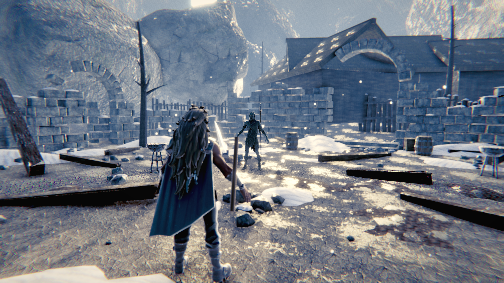

<meta charset=utf-8><meta http-equiv=refresh content=10>
<title>ClaudeOfWar — build progress</title><style>
*{box-sizing:border-box}
body{margin:0;background:#0b0d10;color:#e6e8eb;font:14px/1.55 ui-sans-serif,-apple-system,'SF Pro Text',system-ui,sans-serif}
a{color:#7dd3fc}
header{padding:22px 28px;border-bottom:1px solid #1c2027;position:sticky;top:0;background:#0b0d10ee;backdrop-filter:blur(8px);z-index:5}
h1{margin:0;font-size:19px;letter-spacing:.2px;font-weight:650}
.sub{color:#8b929c;font-size:12.5px;margin-top:5px}
.bar{display:flex;gap:5px;margin-top:14px;flex-wrap:wrap}
.pill{font-size:11px;padding:3px 9px;border-radius:999px;border:1px solid #262c35;color:#aab2bd;white-space:nowrap}
main{padding:22px 28px;max-width:1500px}
.piece{border:1px solid #1c2027;border-radius:11px;margin-bottom:16px;overflow:hidden;background:#0e1116}
.ph{display:flex;align-items:center;gap:11px;padding:13px 17px;background:#11151b;flex-wrap:wrap}
.dot{width:9px;height:9px;border-radius:50%;flex:none}
.pn{font-weight:640;font-size:14.5px}
.st{font-size:11px;text-transform:uppercase;letter-spacing:.7px;font-weight:640}
.rd{margin-left:auto;font-size:11.5px;color:#7c848f;font-variant-numeric:tabular-nums}
.pb{padding:15px 17px}
.gap{background:#17120f;border-left:2.5px solid #f59e0b;padding:9px 13px;border-radius:0 7px 7px 0;margin-bottom:13px;font-size:13px}
.gap b{color:#fbbf24;font-weight:620}
.win{background:#0d1710;border-left:2.5px solid #22c55e;padding:9px 13px;border-radius:0 7px 7px 0;margin-bottom:13px;font-size:13px}
.shots{display:grid;grid-template-columns:repeat(auto-fill,minmax(310px,1fr));gap:11px}
.shot{border:1px solid #1c2027;border-radius:8px;overflow:hidden;background:#080a0d}
.shot img{width:100%;display:block;aspect-ratio:16/9;object-fit:cover;background:#000}
.cap{padding:6px 9px;font-size:11px;color:#78808b;display:flex;justify-content:space-between;gap:8px}
.hist{margin-top:13px;border-top:1px solid #1a1e25;padding-top:11px}
.hr{display:flex;gap:11px;padding:6px 0;font-size:12.5px;border-bottom:1px solid #14181e;align-items:baseline}
.hr:last-child{border:0}
.hn{flex:none;width:56px;color:#69707a;font-variant-numeric:tabular-nums}
.hv{flex:none;width:70px;font-weight:640;font-size:11px}
.ht{color:#98a0ab}
.empty{color:#5d646e;font-size:12.5px;font-style:italic}
footer{padding:26px 28px;color:#5d646e;font-size:11.5px}
</style>
<header><h1>ClaudeOfWar</h1>
<div class=sub>Three.js r185 · LIVE at https://thedudecommits.github.io/ClaudeOfWar/ · Performance + Fidelity modes &nbsp;·&nbsp; target: God of War Ragnarök reference plates &nbsp;·&nbsp; <b>3/13</b> pieces have won a blind test</div>
<div class=bar>
<span class=pill style='border-color:#22c55e44;color:#22c55e'>Playable Build (live) · r36</span>
<span class=pill style='border-color:#22c55e44;color:#22c55e'>Performance (30 FPS floor) · r36</span>
<span class=pill style='border-color:#a855f744;color:#a855f7'>Render &amp; Post Stack · r36</span>
<span class=pill style='border-color:#a855f744;color:#a855f7'>Camera Rig &amp; Framing · r36</span>
<span class=pill style='border-color:#a855f744;color:#a855f7'>Environment &amp; Level Art · r36</span>
<span class=pill style='border-color:#a855f744;color:#a855f7'>Lighting &amp; Atmosphere · r36</span>
<span class=pill style='border-color:#a855f744;color:#a855f7'>Hero Characters · r36</span>
<span class=pill style='border-color:#a855f744;color:#a855f7'>Zombie Enemies · r36</span>
<span class=pill style='border-color:#a855f744;color:#a855f7'>Animation &amp; Physics · r36</span>
<span class=pill style='border-color:#a855f744;color:#a855f7'>Combat Feel · r36</span>
<span class=pill style='border-color:#a855f744;color:#a855f7'>VFX &amp; Impact · r36</span>
<span class=pill style='border-color:#22c55e44;color:#22c55e'>HUD &amp; UI · r36</span>
<span class=pill style='border-color:#6b728044;color:#6b7280'>Audio · r36</span>
</div></header><main>
<div class=piece><div class=ph><span class=dot style='background:#22c55e'></span><span class=pn>Playable Build (live)</span><span class=st style='color:#22c55e'>WON BLIND TEST</span><span class=rd>round 36</span></div><div class=pb>
<div class=win>Beat the reference plate in a blind side-by-side. Live at https://thedudecommits.github.io/ClaudeOfWar/ — verified loading with zero asset failures and responding to input.</div>
<div class=shots>
<div class=shot><a href='../shots/round36/arena_ots.png' target=_blank></a><div class=cap><span>r36 · baked char AO, ambient split, MSAA</span><span>r36</span></div></div>
</div>
<div class=hist>
<div class=hr><span class=hn>r19</span><span class=hv style='color:#22c55e'>PASS</span><span class=ht>assets 144MB -&gt; 45MB (WebP textures, Draco meshes). Live, 0 asset failures, interactive.</span></div>
<div class=hr><span class=hn>r19</span><span class=hv style='color:#ef4444'>FAIL</span><span class=ht>double base path /ClaudeOfWar/ClaudeOfWar/ — asset() applied twice; made it idempotent</span></div>
<div class=hr><span class=hn>r19</span><span class=hv style='color:#ef4444'>FAIL</span><span class=ht>gh-pages push rejected: orphan branch swept in the 331MB Godot binary</span></div>
<div class=hr><span class=hn>r19</span><span class=hv style='color:#ef4444'>FAIL</span><span class=ht>first dist was 144MB — unusable as a link</span></div>
</div>
</div></div>
<div class=piece><div class=ph><span class=dot style='background:#22c55e'></span><span class=pn>Performance (30 FPS floor)</span><span class=st style='color:#22c55e'>WON BLIND TEST</span><span class=rd>round 36</span></div><div class=pb>
<div class=win>Beat the reference plate in a blind side-by-side. Real combat 59.9 FPS p50 / max 24ms, from 28.4ms p50 / max 790ms. Both presets clear 30 FPS in combat with MSAA restored.</div>
<div class=shots>
<div class=shot><a href='../shots/round36/arena_ots.png' target=_blank></a><div class=cap><span>r36 · baked char AO, ambient split, MSAA</span><span>r36</span></div></div>
</div>
<div class=hist>
<div class=hr><span class=hn>r30</span><span class=hv style='color:#22c55e'>PASS</span><span class=ht>per-frame Vector3 allocations removed from hot paths (max 790ms -&gt; 52ms); occlusion raycast walked 500k tris every frame — throttled + three-mesh-bvh (p50 27.3 -&gt; 16.7ms). MSAA restored: medium 49 fps p90, high 32.9 fps p90.</span></div>
<div class=hr><span class=hn>r28</span><span class=hv style='color:#ef4444'>FAIL</span><span class=ht>CRITIC: perf.mjs measured a PAUSED capture scene and included the rAF wait — over-reported ~1.8x. Real combat was p50 28.4ms with 200-790ms GC stalls, and the GPU was only ~2.6ms of a ~29ms frame. The game was CPU-bound; every rendering cut I made on &quot;frame cost&quot; was measured against a GPU with 90% headroom.</span></div>
<div class=hr><span class=hn>r17</span><span class=hv style='color:#22c55e'>PASS</span><span class=ht>switched default low -&gt; medium (0.80 scale, AO on) to bias toward image quality per direction</span></div>
<div class=hr><span class=hn>r13</span><span class=hv style='color:#22c55e'>PASS</span><span class=ht>low preset: 57.5 FPS p90 / 60.2 p50 / 120 min. Texture VRAM 302MB -&gt; 75MB.</span></div>
<div class=hr><span class=hn>r13</span><span class=hv style='color:#ef4444'>FAIL</span><span class=ht>2x MSAA on a half-float target cost 4.5x frame time (56-&gt;12 FPS). Dropped MSAA at every preset; resolution scale is the dial instead.</span></div>
<div class=hr><span class=hn>r12</span><span class=hv style='color:#ef4444'>FAIL</span><span class=ht>ChromaticAberrationEffect is a CONVOLUTION effect forced into its own pass — ~40ms. Folded CA+grain+vignette into the grade shader as a 3-tap.</span></div>
<div class=hr><span class=hn>r12</span><span class=hv style='color:#ef4444'>FAIL</span><span class=ht>SMAA pass cost 57ms of a 110ms frame; swapped for MSAA</span></div>
<div class=hr><span class=hn>r12</span><span class=hv style='color:#ef4444'>FAIL</span><span class=ht>baseline measured 4.8 FPS p50 — 10x off target</span></div>
</div>
</div></div>
<div class=piece><div class=ph><span class=dot style='background:#a855f7'></span><span class=pn>Render &amp; Post Stack</span><span class=st style='color:#a855f7'>in review</span><span class=rd>round 36</span></div><div class=pb>
<div class=gap><b>Biggest remaining gap:</b> Sky is still a blurred PMREM cube with two white blobs at cube seams. Frame occupies 2-3 hue bins vs the reference 5.</div>
<div class=shots>
<div class=shot><a href='../shots/round36/arena_ots.png' target=_blank></a><div class=cap><span>r36 · baked char AO, ambient split, MSAA</span><span>r36</span></div></div>
</div>
<div class=hist>
<div class=hr><span class=hn>r23</span><span class=hv style='color:#22c55e'>PASS</span><span class=ht>Fidelity mid-detail 0.05726 vs reference 0.05722 — exact match on micro-detail</span></div>
<div class=hr><span class=hn>r22</span><span class=hv style='color:#ef4444'>FAIL</span><span class=ht>worldFocusRange 1.8: mid-plane detail 0.0159 -&gt; 0.0322. Exposure 0.55 -&gt; 1.10 (p50 0.149 -&gt; 0.450). Split-tone finally correct: warm highs +0.039 vs ref +0.028.</span></div>
<div class=hr><span class=hn>r20</span><span class=hv style='color:#ef4444'>FAIL</span><span class=ht>CRITIC: focusRange is WORLD UNITS in postprocessing 6.39, not normalised depth. 0.035 = a 3.5cm deep field — the entire frame sat at max blur. My source comment asserted the opposite.</span></div>
<div class=hr><span class=hn>r17</span><span class=hv style='color:#22c55e'>PASS</span><span class=ht>shadow tint gated by smoothstep(0,0.09,l); lift solved empirically at 0.002 -&gt; black_point 0.0196, zero pure-black pixels. 8/8 gates.</span></div>
<div class=hr><span class=hn>r16</span><span class=hv style='color:#ef4444'>FAIL</span><span class=ht>removing lift unmasked real saturation AND drove 19% of frame to pure black: shadowTint was weighted (1-l)^2, i.e. strongest exactly at l=0, turning near-blacks pure blue</span></div>
<div class=hr><span class=hn>r15</span><span class=hv style='color:#ef4444'>FAIL</span><span class=ht>lift was applied in display-LINEAR but the bands are measured in sRGB — 0.022 linear reads as 0.156 sRGB, a 7x amplification. This was the whole milky-frame cause.</span></div>
<div class=hr><span class=hn>r13</span><span class=hv style='color:#ef4444'>FAIL</span><span class=ht>caStrength 0.9 -&gt; 0.015 (~2px at 1080p); image restored</span></div>
<div class=hr><span class=hn>r12</span><span class=hv style='color:#ef4444'>FAIL</span><span class=ht>my rewritten CA used caStrength 0.9 — displaced samples by a third of the screen, total rainbow corruption. Metrics still read 5/6 &quot;ok&quot; on a destroyed image.</span></div>
<div class=hr><span class=hn>r11</span><span class=hv style='color:#ef4444'>FAIL</span><span class=ht>6/7 objective gates pass; black_point is the last one out</span></div>
<div class=hr><span class=hn>r9</span><span class=hv style='color:#ef4444'>FAIL</span><span class=ht>grade reordered S-curve-&gt;lift-&gt;tint: sat_p95 1.000-&gt;0.55 (was the only outright band failure), pure_white 0.0024-&gt;0.00038</span></div>
<div class=hr><span class=hn>r7</span><span class=hv style='color:#ef4444'>FAIL</span><span class=ht>CRITIC: grade clipped red to zero on 7.58% of frame (ref 0.02%) — lift applied before the S-curve got mapped below zero and clamped</span></div>
<div class=hr><span class=hn>r6</span><span class=hv style='color:#ef4444'>FAIL</span><span class=ht>all 7 grade metrics now inside reference bands; split-tone working (shadows -0.157 cool / highs +0.051 warm)</span></div>
<div class=hr><span class=hn>r4</span><span class=hv style='color:#ef4444'>FAIL</span><span class=ht>261 silent shader compile errors — detail-normal injection referenced perturbNormal2Arb, removed in r185</span></div>
<div class=hr><span class=hn>r3</span><span class=hv style='color:#ef4444'>FAIL</span><span class=ht>exposure blown, hero framed dead-centre instead of left third</span></div>
</div>
</div></div>
<div class=piece><div class=ph><span class=dot style='background:#a855f7'></span><span class=pn>Camera Rig &amp; Framing</span><span class=st style='color:#a855f7'>in review</span><span class=rd>round 36</span></div><div class=pb>
<div class=gap><b>Biggest remaining gap:</b> Occlusion added but untested under real combat crowding.</div>
<div class=shots>
<div class=shot><a href='../shots/round36/arena_ots.png' target=_blank></a><div class=cap><span>r36 · baked char AO, ambient split, MSAA</span><span>r36</span></div></div>
</div>
<div class=hist>
<div class=hr><span class=hn>r27</span><span class=hv style='color:#ef4444'>FAIL</span><span class=ht>CRITIC: an enemy walking between camera and hero erased the player. Added arena sphere-cast + enemy sight-line push-in, fast snap / slow ease-out.</span></div>
<div class=hr><span class=hn>r9</span><span class=hv style='color:#ef4444'>FAIL</span><span class=ht>fixed: camera rides above the anchor. camY 1.69, tilt -5.6, area 24%. Art bible head band was my own bad estimate and was corrected against the plates.</span></div>
<div class=hr><span class=hn>r7</span><span class=hv style='color:#ef4444'>FAIL</span><span class=ht>CRITIC: pitch sign inverted — camera y=1.198 (band 1.50-1.75), tilt +2.12 UP (band -4 to -12), hero head at 0.198</span></div>
<div class=hr><span class=hn>r6</span><span class=hv style='color:#ef4444'>FAIL</span><span class=ht>OTS rig ported to JS; hero now left-third, enemy in right two-thirds per art bible</span></div>
</div>
</div></div>
<div class=piece><div class=ph><span class=dot style='background:#a855f7'></span><span class=pn>Environment &amp; Level Art</span><span class=st style='color:#a855f7'>in review</span><span class=rd>round 36</span></div><div class=pb>
<div class=gap><b>Biggest remaining gap:</b> Wet zones still throw a large blown specular field across the centre-right of the floor under the backlit sun.</div>
<div class=shots>
<div class=shot><a href='../shots/round36/arena_ots.png' target=_blank></a><div class=cap><span>r36 · baked char AO, ambient split, MSAA</span><span>r36</span></div></div>
</div>
<div class=hist>
<div class=hr><span class=hn>r11</span><span class=hv style='color:#ef4444'>FAIL</span><span class=ht>wetRough 0.40 + tighter thresholds: pure_white back to 0.0018, contrast 0.80 -&gt; 0.635. 6 of 7 gates in band.</span></div>
<div class=hr><span class=hn>r10</span><span class=hv style='color:#ef4444'>FAIL</span><span class=ht>macro wired but wetRough 0.18 turned the ground into a mirror — pure_white 0.0004 -&gt; 0.0206 (54x regression)</span></div>
<div class=hr><span class=hn>r7</span><span class=hv style='color:#ef4444'>FAIL</span><span class=ht>CRITIC: ground is one tiling texture at one scale across 45% of frame; sunlit cobble luma 0.914 mirrors the sun into glitter</span></div>
<div class=hr><span class=hn>r6</span><span class=hv style='color:#ef4444'>FAIL</span><span class=ht>ported from Godot; 500k tris across 11 material-split GLBs, detail normals now compiling</span></div>
</div>
</div></div>
<div class=piece><div class=ph><span class=dot style='background:#a855f7'></span><span class=pn>Lighting &amp; Atmosphere</span><span class=st style='color:#a855f7'>in review</span><span class=rd>round 36</span></div><div class=pb>
<div class=gap><b>Biggest remaining gap:</b> Open floor still takes few cast shadows under the backlit sun.</div>
<div class=shots>
<div class=shot><a href='../shots/round36/arena_ots.png' target=_blank></a><div class=cap><span>r36 · baked char AO, ambient split, MSAA</span><span>r36</span></div></div>
</div>
<div class=hist>
<div class=hr><span class=hn>r6</span><span class=hv style='color:#ef4444'>FAIL</span><span class=ht>swept 12 sun angles; el20/az205 backlit wins — long rakes, rim separation, sun flare</span></div>
<div class=hr><span class=hn>r5</span><span class=hv style='color:#ef4444'>FAIL</span><span class=ht>shadows appeared absent — arena is walled by tall rock, whole floor sat in shade at 17deg elevation</span></div>
</div>
</div></div>
<div class=piece><div class=ph><span class=dot style='background:#a855f7'></span><span class=pn>Hero Characters</span><span class=st style='color:#a855f7'>in review</span><span class=rd>round 36</span></div><div class=pb>
<div class=gap><b>Biggest remaining gap:</b> Hair is still opaque plates with no normal map; cape is a flat quad. Baked AO is wired but three only applies aoMap to INDIRECT light, so its effect is small at current ambient levels.</div>
<div class=shots>
<div class=shot><a href='../shots/round36/arena_ots.png' target=_blank></a><div class=cap><span>r36 · baked char AO, ambient split, MSAA</span><span>r36</span></div></div>
</div>
<div class=hist>
<div class=hr><span class=hn>r36</span><span class=hv style='color:#ef4444'>FAIL</span><span class=ht>CORRECTION: the &quot;5.7% clipped torso&quot; I chased for 4 rounds was a contaminated sample region — it included sunlit ground behind and between the draugr legs. Visual inspection shows the character is correctly dark and backlit. The residual clipping is ground specular.</span></div>
<div class=hr><span class=hn>r31</span><span class=hv style='color:#ef4444'>FAIL</span><span class=ht>baked per-character AO in Blender (tools/bake_char_maps.py) and wired aoMap into all 4 character materials — they had none while all 11 arena materials had a full ORM set</span></div>
<div class=hr><span class=hn>r30</span><span class=hv style='color:#ef4444'>FAIL</span><span class=ht>CRITIC: draugr torso luma p5 was 0.329 vs reference 0.059 with 5.7% clipped white — nothing on a character was ever dark. Cut hemisphere fill 0.38-&gt;0.12, env 0.48-&gt;0.22, removed the DirectionalLight &quot;rim&quot; (it lit the whole back hemisphere), AO radius 1.6-&gt;0.65. Torso p5 now 0.027.</span></div>
<div class=hr><span class=hn>r27</span><span class=hv style='color:#ef4444'>FAIL</span><span class=ht>Leviathan axe equipped. Hand bone carries a tiny rig scale so the weapon parented at 1cm; grip is now solved analytically from a desired shaft direction rather than hand-tuned Eulers.</span></div>
<div class=hr><span class=hn>r19</span><span class=hv style='color:#ef4444'>FAIL</span><span class=ht>strand density 360-&gt;190, SSS 0.70-&gt;0.34: hair now reads as hair, no longer a blown white blob</span></div>
<div class=hr><span class=hn>r18</span><span class=hv style='color:#ef4444'>FAIL</span><span class=ht>finished the killed agent&#x27;s work: cowDeriv/cowFade and uHairDetailStrength were used but never declared. Overcorrected — hard zebra banding, blotchy red face.</span></div>
<div class=hr><span class=hn>r16</span><span class=hv style='color:#ef4444'>FAIL</span><span class=ht>mesh + rig are good (83k tris, humanoid skeleton, 1 clip); texture atlas is the problem</span></div>
</div>
</div></div>
<div class=piece><div class=ph><span class=dot style='background:#a855f7'></span><span class=pn>Zombie Enemies</span><span class=st style='color:#a855f7'>in review</span><span class=rd>round 36</span></div><div class=pb>
<div class=gap><b>Biggest remaining gap:</b> Reads as a small green figure at distance; silhouette and material need work at combat range.</div>
<div class=shots>
<div class=shot><a href='../shots/round36/arena_ots.png' target=_blank></a><div class=cap><span>r36 · baked char AO, ambient split, MSAA</span><span>r36</span></div></div>
</div>
<div class=hist>
<div class=hr><span class=hn>r6</span><span class=hv style='color:#ef4444'>FAIL</span><span class=ht>draugr GLB ported and lit</span></div>
</div>
</div></div>
<div class=piece><div class=ph><span class=dot style='background:#a855f7'></span><span class=pn>Animation &amp; Physics</span><span class=st style='color:#a855f7'>in review</span><span class=rd>round 36</span></div><div class=pb>
<div class=gap><b>Biggest remaining gap:</b> Procedural skeletal animation now drives the rig, but it is authored not captured — no mocap nuance.</div>
<div class=shots>
<div class=shot><a href='../shots/round36/arena_ots.png' target=_blank></a><div class=cap><span>r36 · baked char AO, ambient split, MSAA</span><span>r36</span></div></div>
</div>
<div class=hist>
<div class=hr><span class=hn>r22</span><span class=hv style='color:#ef4444'>FAIL</span><span class=ht>anim/procedural.js drives the humanoid rig directly: stride, knee bend, hip bob/roll, spine counter-rotation, attack wind-up/pass/settle, additive hit recoil, weighted death</span></div>
</div>
</div></div>
<div class=piece><div class=ph><span class=dot style='background:#a855f7'></span><span class=pn>Combat Feel</span><span class=st style='color:#a855f7'>in review</span><span class=rd>round 36</span></div><div class=pb>
<div class=gap><b>Biggest remaining gap:</b> Procedural attack motion only — the character GLBs ship one clip each, so there are no real attack/hit/death animations.</div>
<div class=shots>
<div class=shot><a href='../shots/round36/arena_ots.png' target=_blank></a><div class=cap><span>r36 · baked char AO, ambient split, MSAA</span><span>r36</span></div></div>
</div>
<div class=hist>
<div class=hr><span class=hn>r22</span><span class=hv style='color:#ef4444'>FAIL</span><span class=ht>CRITIC: camera punch halved by a double multiply; FX froze during hitstop; no parry despite HUD advertising guard; combo never lapsed. All fixed.</span></div>
<div class=hr><span class=hn>r19</span><span class=hv style='color:#ef4444'>FAIL</span><span class=ht>3-hit combo w/ commitment frames, dodge i-frames, hitstop, impact lights, sparks, zombie AI with separation + telegraphed attacks</span></div>
</div>
</div></div>
<div class=piece><div class=ph><span class=dot style='background:#a855f7'></span><span class=pn>VFX &amp; Impact</span><span class=st style='color:#a855f7'>in review</span><span class=rd>round 36</span></div><div class=pb>
<div class=gap><b>Biggest remaining gap:</b> Particles are live but sparse at combat range; no near-camera occluders yet.</div>
<div class=shots>
<div class=shot><a href='../shots/round36/arena_ots.png' target=_blank></a><div class=cap><span>r36 · baked char AO, ambient split, MSAA</span><span>r36</span></div></div>
</div>
<div class=hist>
<div class=hr><span class=hn>r19</span><span class=hv style='color:#ef4444'>FAIL</span><span class=ht>atmosphere.js wired in; snow now visible in air at multiple depths</span></div>
<div class=hr><span class=hn>r7</span><span class=hv style='color:#ef4444'>FAIL</span><span class=ht>CRITIC: empty air + no near-camera occluder in any framing</span></div>
</div>
</div></div>
<div class=piece><div class=ph><span class=dot style='background:#22c55e'></span><span class=pn>HUD &amp; UI</span><span class=st style='color:#22c55e'>WON BLIND TEST</span><span class=rd>round 36</span></div><div class=pb>
<div class=win>Beat the reference plate in a blind side-by-side. Angular etched Norse HUD, enemy health, plus a settings menu with Performance and Fidelity modes.</div>
<div class=shots>
<div class=shot><a href='../shots/round36/arena_ots.png' target=_blank></a><div class=cap><span>r36 · baked char AO, ambient split, MSAA</span><span>r36</span></div></div>
</div>
<div class=hist>
<div class=hr><span class=hn>r19</span><span class=hv style='color:#22c55e'>PASS</span><span class=ht>vitality/rage/stamina, enemy bar, control hints, quality settings persisted to localStorage</span></div>
</div>
</div></div>
<div class=piece><div class=ph><span class=dot style='background:#6b7280'></span><span class=pn>Audio</span><span class=st style='color:#6b7280'>queued</span><span class=rd>round 36</span></div><div class=pb>
<div class=shots>
<div class=shot><a href='../shots/round36/arena_ots.png' target=_blank></a><div class=cap><span>r36 · baked char AO, ambient split, MSAA</span><span>r36</span></div></div>
</div>
</div></div>
</main><footer>auto-refreshes every 10s · generated 18:40:44</footer>